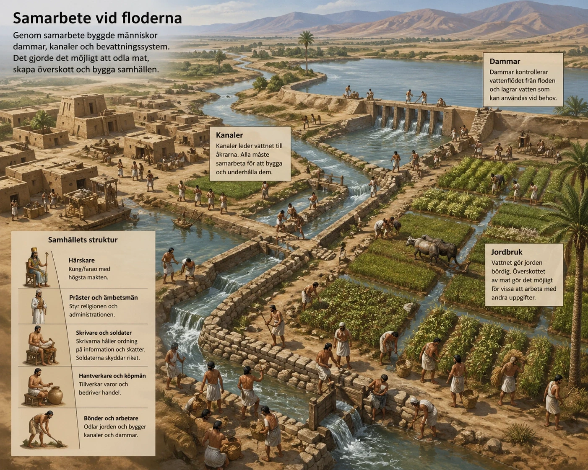
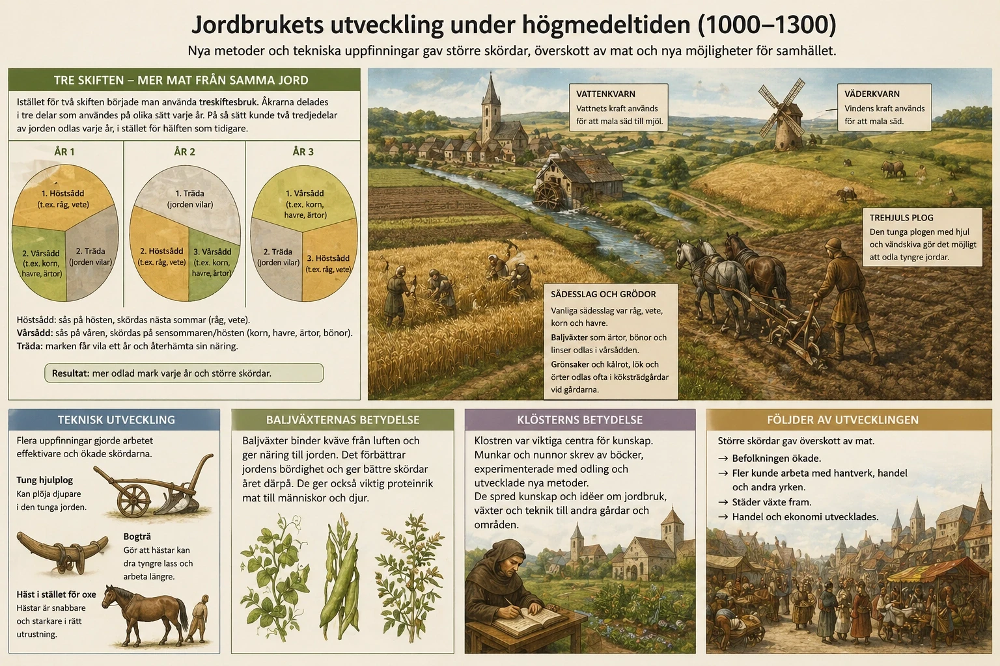

— från flodernas kanaler till plogarna som förändrade Europa —
Jordbrukets utveckling är en av de mest avgörande faktorerna bakom hur mänskliga samhällen har vuxit fram och förändrats genom historien. Från de första flodkulturerna i Mesopotamien och Egypten till jordbrukets effektivisering under högmedeltiden i Europa ser vi ett tydligt mönster: när människor lyckas producera ett överskott av mat förändras hela samhällets struktur. Det är detta överskott som möjliggör nya yrken, teknisk utveckling, städer och mer komplexa maktstrukturer.
I de tidiga flodkulturerna, som växte fram kring floderna Eufrat och Tigris i Mesopotamien samt längs Nilen i Egypten, var jordbruket nära kopplat till naturens rytm. Floderna svämmade regelbundet över och lämnade efter sig näringsrik jord, vilket skapade goda förutsättningar för odling. För att utnyttja detta krävdes dock att människor organiserade sig och samarbetade i stor skala. De byggde dammar, kanaler och bevattningssystem för att kontrollera vattnet och säkerställa stabila skördar. Detta samarbete lade grunden för de första organiserade samhällena och tidiga statsbildningarna.
När jordbruket började producera mer mat än vad som krävdes för den egna överlevnaden uppstod ett överskott. Detta var en avgörande förändring, eftersom det gjorde det möjligt för människor att ägna sig åt andra uppgifter än jordbruk. Nya yrken växte fram, såsom hantverkare, köpmän, soldater och präster. Särskilt viktig var framväxten av skrivare, eftersom behovet av att hålla ordning på skatter, lager och handel ökade i takt med att samhället blev mer komplext.
Det var i detta sammanhang som skriftspråket utvecklades. I Mesopotamien skapades kilskriften, medan egyptierna utvecklade hieroglyfer. I Egypten skrevs dessa ofta på papyrus, ett material som framställdes av en växt som växte längs Nilen. Papyrus gjorde det möjligt att dokumentera information mer effektivt än tidigare och bidrog till att utveckla administration, handel och kunskapsspridning. Skriften blev därmed ett centralt verktyg för att organisera samhället och utöva makt.
Samtidigt växte tydliga sociala hierarkier fram. Samhället organiserades i olika nivåer där makt och resurser var ojämnt fördelade. Högst upp fanns kungen eller faraon, ofta med en gudomlig ställning, följt av präster och ämbetsmän som styrde religion och administration. Därefter kom skrivare, soldater och hantverkare, medan bönderna utgjorde majoriteten av befolkningen och ansvarade för matproduktionen. Längst ner fanns människor med låg status, såsom slavar. I denna utveckling förstärktes också ojämlikheten mellan könen. Män dominerade de flesta maktpositioner, medan kvinnors roller i högre grad knöts till hem och familj. Även om variationer fanns, innebar flodkulturerna en tydlig etablering av patriarkala strukturer som kom att prägla många senare samhällen.

Under högmedeltiden i Europa, cirka 1000–1300, sker en ny fas i jordbrukets utveckling. Här handlar det inte om att jordbruket uppstår, utan om att det effektiviseras genom nya metoder och tekniska innovationer. En av de viktigaste förändringarna är införandet av treskiftesbruket. Åkermarken delades upp i tre delar där olika grödor odlades i rotation. En del användes för höstsådd, till exempel råg och vete, som såddes på hösten och skördades nästa sommar. En annan del användes för vårsådd, såsom korn, havre och baljväxter som ärtor och bönor, vilka såddes på våren och skördades senare samma år. Den tredje delen låg i träda för att jorden skulle återhämta sig. Genom detta system kunde två tredjedelar av jorden brukas varje år, vilket ökade produktionen av mat avsevärt.
Baljväxterna spelade en särskilt viktig roll eftersom de tillförde kväve till jorden och därmed förbättrade dess bördighet. Detta gjorde att skördarna blev större och mer stabila över tid. Samtidigt bidrog de till en mer näringsrik kost för befolkningen.
Den tekniska utvecklingen var också avgörande. Den tunga hjulplogen gjorde det möjligt att odla tidigare svårbrukade jordar, särskilt i norra Europa. Förbättrade seldon, såsom bogträet, gjorde att hästar kunde användas mer effektivt än oxar, vilket ökade arbetskapaciteten. Dessutom utvecklades vatten- och väderkvarnar som kunde mala spannmål med hjälp av naturens krafter. Dessa innovationer sparade tid och energi och bidrog till en mer effektiv produktion.
Precis som i flodkulturerna ledde dessa förändringar till ett överskott av mat. Detta överskott gjorde det möjligt för fler människor att arbeta med annat än jordbruk, vilket i sin tur bidrog till att städer växte fram och att handel och hantverk utvecklades. En viktig aktör i denna utveckling var klostren, som fungerade som centra för kunskap och innovation. Munkar och nunnor dokumenterade och spred nya jordbruksmetoder, experimenterade med odling och bidrog till att förbättra produktionen. Genom klostrens nätverk kunde idéer spridas över stora områden, vilket påskyndade utvecklingen.

När man jämför flodkulturerna med högmedeltiden framträder både likheter och skillnader. Den viktigaste likheten är att jordbrukets utveckling i båda fallen skapar ett överskott som driver samhällsutvecklingen framåt. Detta överskott gör det möjligt för människor att specialisera sig, vilket leder till nya yrken, ökad handel och framväxten av städer.
Skillnaderna ligger främst i hur denna utveckling sker och vilka konsekvenser den får. I flodkulturerna handlar det om uppkomsten av de första civilisationerna, där kontrollen över naturen och vattnet är central. Här utvecklas skriftspråk, statsmakt och hierarkier som koncentrerar makten till en elit. Under högmedeltiden sker utvecklingen istället inom redan etablerade samhällen och drivs av tekniska innovationer och förbättrade metoder. Resultatet blir en mer dynamisk ekonomi där handel och städer får en allt viktigare roll, och där makten gradvis sprids till fler grupper i samhället.
Sammanfattningsvis visar både flodkulturerna och högmedeltiden att jordbruket utgör grunden för all samhällsutveckling. Det är genom möjligheten att producera ett överskott av mat som människor kan frigöra tid och resurser till andra aktiviteter. Detta leder till specialisering, teknisk utveckling och mer komplexa samhällsstrukturer. Samtidigt skapar denna utveckling också nya former av ojämlikhet och maktfördelning. Jordbrukets historia är därför inte bara en berättelse om hur människor producerar mat, utan om hur hela samhällen formas, organiseras och förändras över tid.
Historia · Revolutionernas tid · Bakgrund